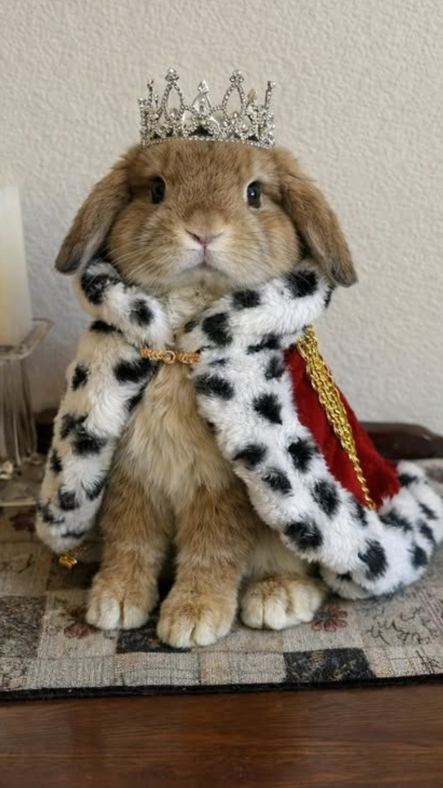

Przygotowanie odpowiedniej wyprawki to bardzo ważny krok przed przyjęciem królika do domu. Dobrze dobrane rzeczy zapewnią mu komfort, bezpieczeństwo i zdrowie.
Minimalne wymiary klatki dla 1 królika to około 120 × 50 cm, ale im większa, tym lepiej. Najlepszym rozwiązaniem jest jednak duży kojec lub wolny wybieg(królik ma dostęp do klatki 24/7).
Klatka nie powinna być jedynym miejscem przebywania królika — musi mieć codziennie czas na ruch poza nią min.4 godz.
Królik powinien mieć kuwetę, najlepiej wypełnioną żwirkiem lub pelletem. Nie należy używać żwirków zapachowych.
Najlepiej sprawdza się ciężka miska na wodę, której królik nie przewróci. Można także używać poidełka, ale tylko jeśli królik nie chce pić z miski.
Siano powinno być dostępne cały czas, dlatego warto kupić paśnik. Oprócz tego potrzebny będzie granulat dobrej jakości, dużo rodzai różnych ziół oraz świeże warzywa.
Królik potrzebuje miejsca, w którym może się schować i odpocząć. Może to być domek, tunel lub inne bezpieczne schronienie.
Króliki potrzebują zajęcia, dlatego warto zapewnić im zabawki do gryzienia, kopania i eksplorowania.
Mogą to być np. kartony, tunele, zabawki logiczne czy naturalne gryzaki.